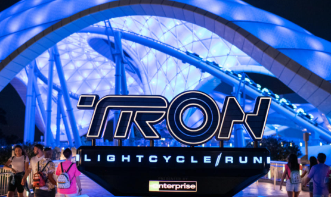
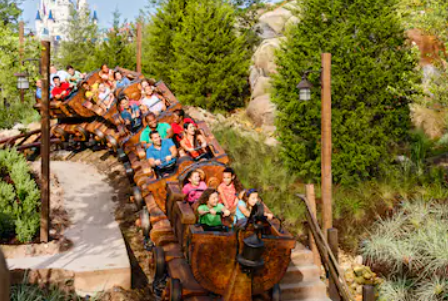
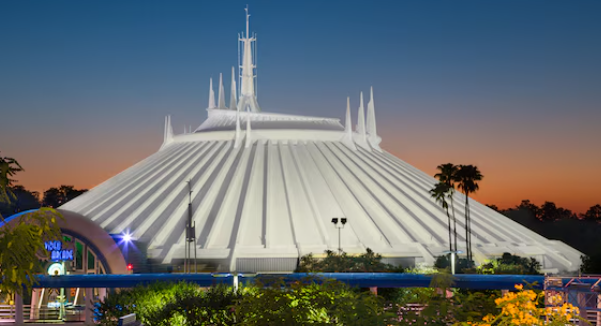
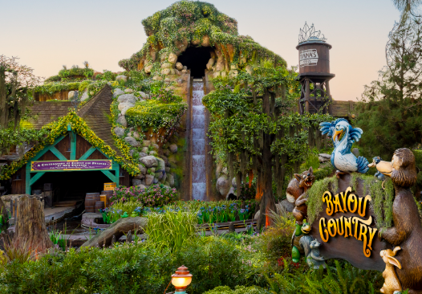
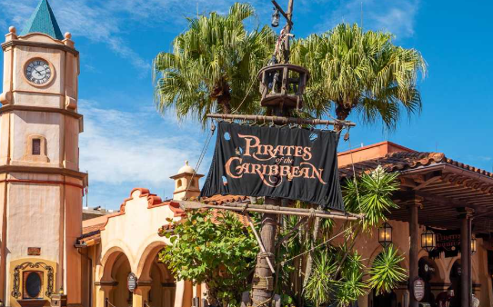
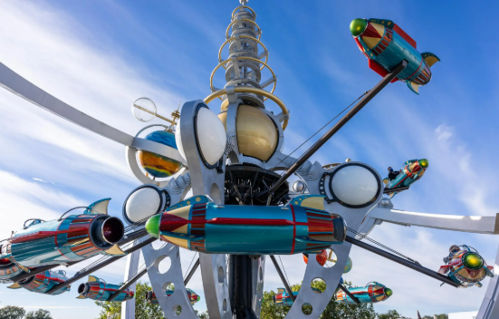

Magic Kingdom - Thrill Seeking Day
For starters most of these rides have a minimum 48 inches height requirement. So take that into consideration even if you have kids who love rollercoasters. This park is known for the magic. This park has the castel and by far the biggest crowd so making sure that you get to the park right when it opens is essential in making sure that you don't have to wait in long lines.
TRON
The very first ride that you head to once you are in the parks is going to be TRON this is a new ride and has also recently gotten rid of its virtual queue. This rollercoast has you get on the back of a light cycle bike and it has you race with other competers in the ride.
Seven Dwarfs Mine Train
This ride is right around the corrner to TRON so you are going to go straight here after you ride TRON. This rololercoaster takes you on adventure through the mines where you can see the seven darfs from Snowwhite working in the mines. It is important to note that the carts that you are riding in swing back and fourth so make sure if you have motion sickness to take that into account before you get on.
Space Mountain
This ride can be found over in Tomorrow land which is not to far from Fantasy land which was where the Seven Dwarfs Mine Train was located. This ride can also build up quite the line. However if you head over here early you can get lucky and have under a thirty minute wait. This ride is very prone to motion sickness since it is in the dark with lots of small stars that can be seen.
Tiana's Bayou Adventure
Next you wanna head over to Frontier land which is directly accross the park from Tomorrow land. By this point it should be starting to get warmer which means that lot of people are going to start heading over here to ride this ride since it is a water ride. It is importnat to note that it is best to wear a poncho on this ride as you will likly get wet while riding.
Pirates of the Caribbean
This ride in no more than a five minute walk from Tiana's so you will wanna head over here next. This boat ride might not seem like a thrilling ride but it has a very thrilling plot with cannon balls even being shot at you and going down a drop that might even get you wet. The pirates really have that thrill theme and its a great way to take a quick break and cool off.
Astro Orbiter
Head back over to Tommorrow land where you will find Astro Orbiter this ride takes you high up and spins you around. This ride gives you a great view of the park and is a perfect way to end your thrill seeking day.